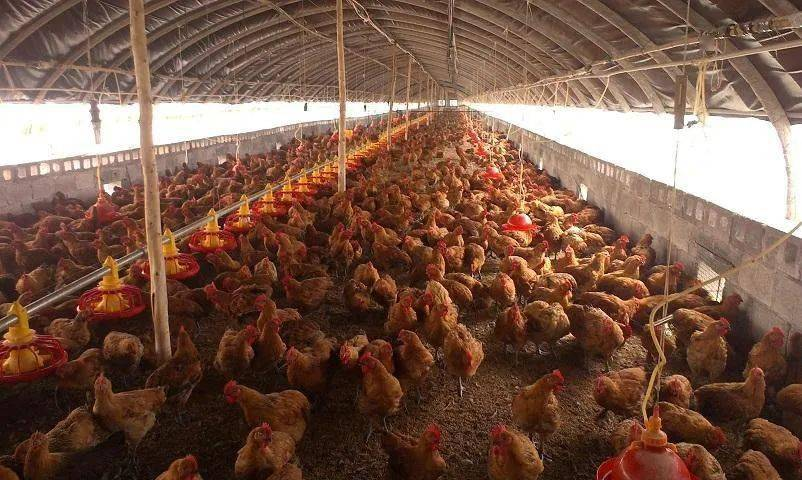

第 14 页 · 收尾
≈ 15 min
前置：13 3D 打印实操
选型决策树 How to Choose
这节课的总结。 从"任务需求"反推"机构选型"——这是 Part 1 任务拆解方法论的延续。 永远先问"我要什么运动"，再问"用什么机构实现"。
设计流程：任务 → 运动 → 机构
Part 1 讲的"解耦→耦合"是横向维度（同一层级内拆分）； 下面这张图是纵向维度（从需求到物理实现）。
决策树（点机构名回顾对应页面）
根 · 任务
设计一个机构
问 1 · 末端走什么轨迹
直线？曲线？摆动？停歇？
问 2 · 再问 3 个约束
精度？负载？速度？
精度
μm 级 → 丝杆 / 滚珠
负载
大 → 齿轮 / 蜗轮
速度
高速 → 同步带 / 直接驱动
成本
低成本 → 曲柄 / 气缸
起点：任务需求
第一层判断：运动类型
第二层：候选机构
第三层：约束筛选
回到我们的机器人：每个机构选择的回顾
整套课程的核心：每个机构都不是"教科书里这么用"，而是"我们的任务这么要求"。
附：往届方案参考——该继承什么，该升级什么
课程方法论参考往届参赛队的经验（含 2025 国际亚军 Machine Family 队），但你上场时的技术选型要按那一年的主流来。对照表：
| 维度 | 往届赛车（2025 亚军） | 现在的主流 | 怎么想 |
|---|---|---|---|
| 方法论 | 任务拆解 → 解耦 → 耦合 | 不变 | 继承——这是设计思维，永不过时 |
| 底盘驱动 | 4× 42 步进直驱麦轮（开环） | 直流减速 + 编码器闭环 | 升级——闭环应对负载突变与打滑 |
| 轮组 | 刚性安装 | 弹簧悬挂模块（贴地） | 升级——贴地是闭环的前提 |
| 主控 | Arduino Mega 2560 | STM32（多路 PWM/编码器/定时器） | 升级——接口与实时性跟上了执行器 |
| 末端执行器 | 刮板 + 压力传感器称重 | 思路不变；TPU 柔顺爪是新选项 | 继承——"能不夹就不夹"仍成立 |
| 材料制造 | PLA 蜂窝筐 + 亚克力板 + 泡棉/织物 | 同思路 + 更强器材（拓竹/激光切割） | 继承——按受力选料、按形状选工艺 |
给大一的三句话
① 先想清楚再动手。 把末端要走的轨迹画在纸上，再问"几自由度能实现"，最后才选机构。
② 算清自由度。 F = 3n − 2PL − PH 不是公式游戏——它告诉你这个机构能不能动、需要几个电机。
③ 用现成件。 舵机、步进、同步带轮、直线导轨都是商品化的——不要重新发明轮子，把精力花在整合上。
